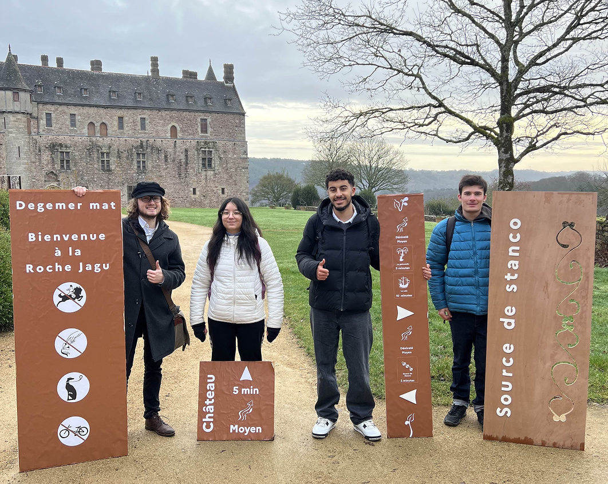
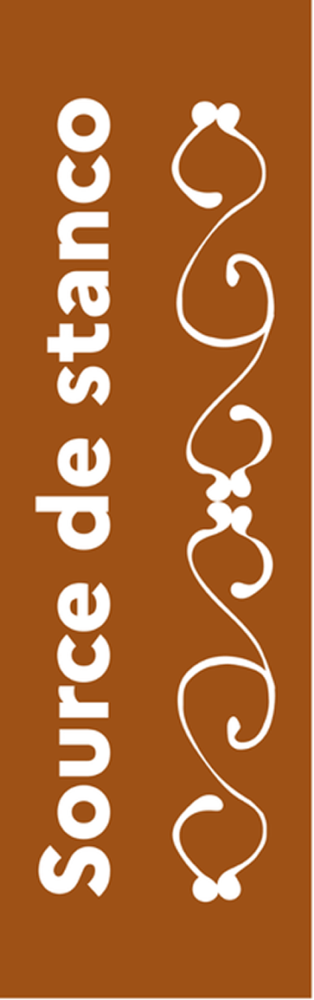
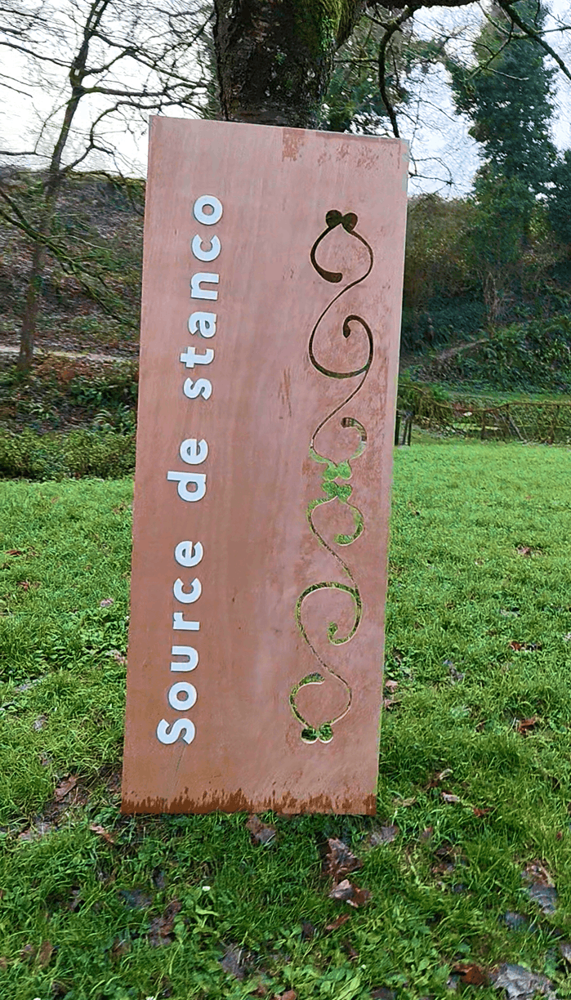
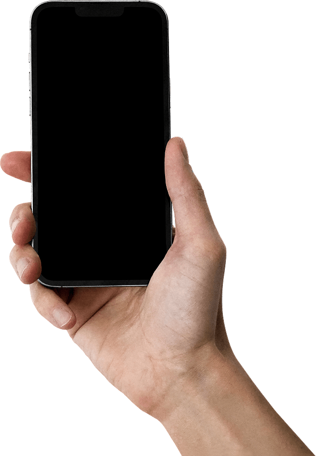
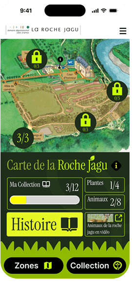
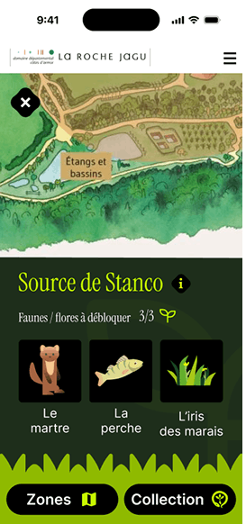
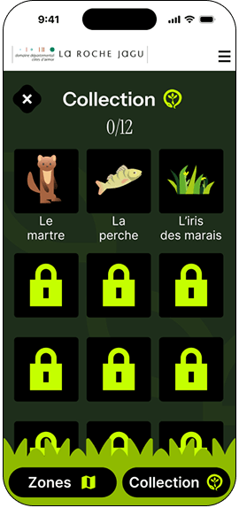
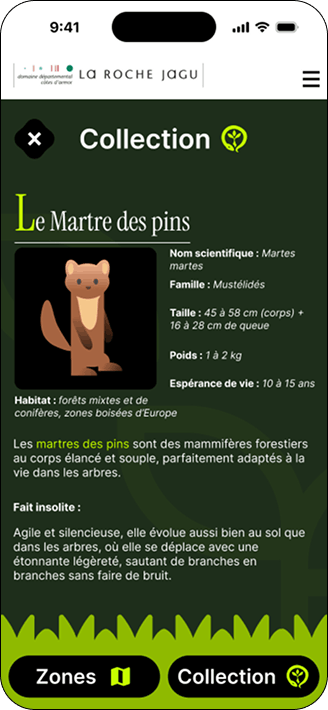
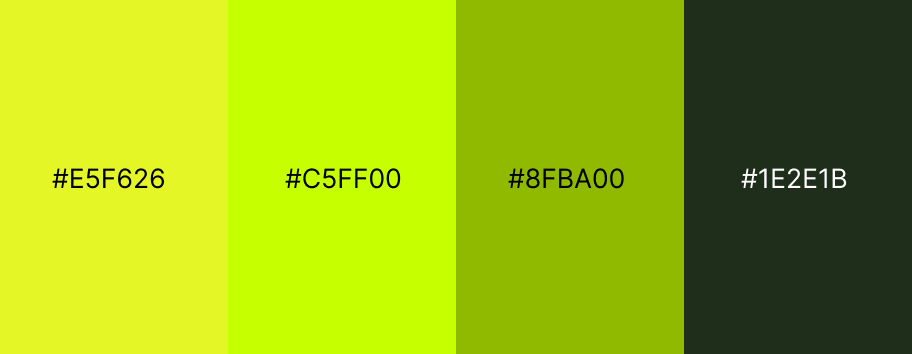

Le parc de la Roche Jagu (Côtes-d'Armor) contient une mosaïque de paysages et une grande diversité de faune et de flore. C'est un endroit idéal pour se ressourcer, mais qui manque de signalétique. Notre équipe a conçu des panneaux simples, lisibles qui seraient en acier corten, accompagnés d'une application mobile de découverte de la faune et de la flore.
Dossier en ligne
Équipe Breizh design







Instrument Serif
Inter
